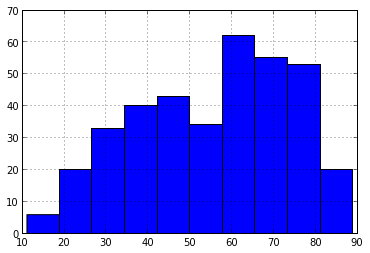
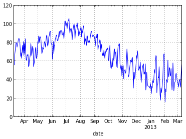
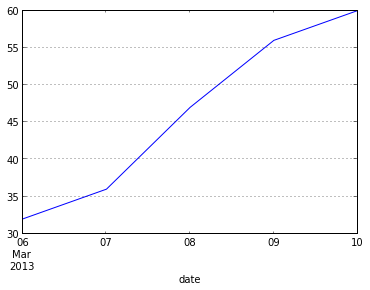
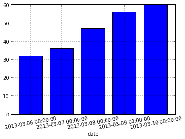
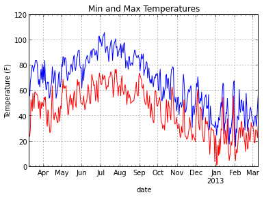

An Introduction to Pandas
Posted: 2013-04-23When dealing with numeric matrices and vectors in Python, NumPy makes life a lot easier. For more complex data, however, it leaves a lot to be desired. If you're used to working with data frames in R, doing data analysis directly with NumPy feels like a step back.
Fortunately, some nice folks have written the Python Data Analysis Library (a.k.a. pandas).
Pandas provides an R-like DataFrame, produces high quality plots with matplotlib, and integrates nicely with other libraries that expect NumPy arrays.
In this tutorial, we'll go through the basics of pandas using a year's worth of weather data from Weather Underground. Pandas has a lot of functionality, so we'll only be able to cover a small fraction of what you can do. Check out the (very readable) pandas docs if you want to learn more.
Getting Started
Installing pandas should be an easy process if you use pip:
sudo pip install pandas
For more complex scenarios, please see the installation instructions.
OK, let's get started by importing the pandas library.
import pandas
Next, let's read in our data.
Because it's in a CSV file, we can use pandas' read_csv function to pull it directly into a DataFrame.
data = pandas.read_csv("data/weather_year.csv")
We can get a summary of the DataFrame by printing the object.
data
Output:
<class 'pandas.core.frame.DataFrame'> Int64Index: 366 entries, 0 to 365 Data columns: EDT 366 non-null values Max TemperatureF 366 non-null values Mean TemperatureF 366 non-null values Min TemperatureF 366 non-null values Max Dew PointF 366 non-null values MeanDew PointF 366 non-null values Min DewpointF 366 non-null values Max Humidity 366 non-null values Mean Humidity 366 non-null values Min Humidity 366 non-null values Max Sea Level PressureIn 366 non-null values Mean Sea Level PressureIn 366 non-null values Min Sea Level PressureIn 366 non-null values Max VisibilityMiles 366 non-null values Mean VisibilityMiles 366 non-null values Min VisibilityMiles 366 non-null values Max Wind SpeedMPH 366 non-null values Mean Wind SpeedMPH 366 non-null values Max Gust SpeedMPH 365 non-null values PrecipitationIn 366 non-null values CloudCover 366 non-null values Events 162 non-null values WindDirDegrees 366 non-null values dtypes: float64(4), int64(16), object(3)
This gives us a lot of information. First, we can see that there are 366 rows (entries) -- a year and a day's worth of weather. Each column is printed along with however many "non-null" values are present.
We'll talk more about null (or missing) values in pandas later, but for now we can note that only the "Max Gust SpeedMPH" and "Events" columns have fewer than 366 non-null values.
Lastly, the data types (dtypes) of the columns are printed at the very bottom. We can see that there are 4 float64, 16 int64, and 3 object columns.
len(data)
Output:
366
Using len on a DataFrame will give you the number of rows. You can get the column names using the columns property.
data.columns
Output:
Index([EDT, Max TemperatureF, Mean TemperatureF, Min TemperatureF,
Max Dew PointF, MeanDew PointF, Min DewpointF, Max Humidity,
Mean Humidity, Min Humidity, Max Sea Level PressureIn,
Mean Sea Level PressureIn, Min Sea Level PressureIn,
Max VisibilityMiles, Mean VisibilityMiles, Min VisibilityMiles,
Max Wind SpeedMPH, Mean Wind SpeedMPH, Max Gust SpeedMPH,
PrecipitationIn, CloudCover, Events, WindDirDegrees], dtype=object)
Columns can be accessed in two ways. The first is using the DataFrame like a dictionary with string keys:
data["EDT"]
Output:
0 2012-3-10 1 2012-3-11 2 2012-3-12 3 2012-3-13 4 2012-3-14 5 2012-3-15 6 2012-3-16 7 2012-3-17 8 2012-3-18 9 2012-3-19 10 2012-3-20 11 2012-3-21 12 2012-3-22 13 2012-3-23 14 2012-3-24 ... 351 2013-2-24 352 2013-2-25 353 2013-2-26 354 2013-2-27 355 2013-2-28 356 2013-3-1 357 2013-3-2 358 2013-3-3 359 2013-3-4 360 2013-3-5 361 2013-3-6 362 2013-3-7 363 2013-3-8 364 2013-3-9 365 2013-3-10 Name: EDT, Length: 366
You can get multiple columns out at the same time by passing in a list of strings.
data[["EDT", "Mean TemperatureF"]]
Output:
<class 'pandas.core.frame.DataFrame'> Int64Index: 366 entries, 0 to 365 Data columns: EDT 366 non-null values Mean TemperatureF 366 non-null values dtypes: int64(1), object(1)
The second way to access columns is using the dot syntax. This only works if your column name could also be a Python variable name (i.e., no spaces), and if it doesn't collide with another DataFrame property or function name (e.g., count, sum).
data.EDT
Output:
0 2012-3-10 1 2012-3-11 2 2012-3-12 3 2012-3-13 4 2012-3-14 5 2012-3-15 6 2012-3-16 7 2012-3-17 8 2012-3-18 9 2012-3-19 10 2012-3-20 11 2012-3-21 12 2012-3-22 13 2012-3-23 14 2012-3-24 ... 351 2013-2-24 352 2013-2-25 353 2013-2-26 354 2013-2-27 355 2013-2-28 356 2013-3-1 357 2013-3-2 358 2013-3-3 359 2013-3-4 360 2013-3-5 361 2013-3-6 362 2013-3-7 363 2013-3-8 364 2013-3-9 365 2013-3-10 Name: EDT, Length: 366
We'll be mostly using the dot syntax here because you can auto-complete the names in IPython. The first pandas function we'll learn about is head(). This gives us the first 5 items in a column (or the first 5 rows in the DataFrame).
data.EDT.head()
Output:
0 2012-3-10 1 2012-3-11 2 2012-3-12 3 2012-3-13 4 2012-3-14 Name: EDT
Passing in a number n gives us the first n items in the column. There is also a corresponding tail() method that gives the last n items or rows.
data.EDT.head(10)
Output:
0 2012-3-10 1 2012-3-11 2 2012-3-12 3 2012-3-13 4 2012-3-14 5 2012-3-15 6 2012-3-16 7 2012-3-17 8 2012-3-18 9 2012-3-19 Name: EDT
This also works with the dictionary syntax.
data["Mean TemperatureF"].head()
Output:
0 40 1 49 2 62 3 63 4 62 Name: Mean TemperatureF
Fun with Columns
The column names in data are a little unweildy, so we're going to rename them. This is as easy as assigning a new list of column names to the columns property of the DataFrame.
data.columns = ["date", "max_temp", "mean_temp", "min_temp", "max_dew", "mean_dew", "min_dew", "max_humidity", "mean_humidity", "min_humidity", "max_pressure", "mean_pressure", "min_pressure", "max_visibilty", "mean_visibility", "min_visibility", "max_wind", "mean_wind", "min_wind", "precipitation", "cloud_cover", "events", "wind_dir"]
These should be in the same order as the original columns. Let's take another look at our DataFrame summary.
data
Output:
<class 'pandas.core.frame.DataFrame'> Int64Index: 366 entries, 0 to 365 Data columns: date 366 non-null values max_temp 366 non-null values mean_temp 366 non-null values min_temp 366 non-null values max_dew 366 non-null values mean_dew 366 non-null values min_dew 366 non-null values max_humidity 366 non-null values mean_humidity 366 non-null values min_humidity 366 non-null values max_pressure 366 non-null values mean_pressure 366 non-null values min_pressure 366 non-null values max_visibilty 366 non-null values mean_visibility 366 non-null values min_visibility 366 non-null values max_wind 366 non-null values mean_wind 366 non-null values min_wind 365 non-null values precipitation 366 non-null values cloud_cover 366 non-null values events 162 non-null values wind_dir 366 non-null values dtypes: float64(4), int64(16), object(3)
Now our columns can all be accessed using the dot syntax!
data.mean_temp.head()
Output:
0 40 1 49 2 62 3 63 4 62 Name: mean_temp
There are lots useful methods on columns, such as std() to get the standard deviation. Most of pandas' methods will happily ignore missing values like NaN.
data.mean_temp.std()
Output:
18.436505996251075
Some methods, like plot() and hist() produce plots using matplotlib. We'll go over plotting in more detail later.
data.mean_temp.hist()
Output:
<matplotlib.axes.AxesSubplot at 0x59ddad0>

By the way, many of the column-specific methods also work on the entire DataFrame. Instead of a single number, you'll get a result for each column.
data.std()
Output:
max_temp 20.361247 mean_temp 18.436506 min_temp 17.301141 max_dew 16.397178 mean_dew 16.829996 min_dew 17.479449 max_humidity 9.108438 mean_humidity 9.945591 min_humidity 15.360261 max_pressure 0.172189 mean_pressure 0.174112 min_pressure 0.182476 max_visibilty 0.073821 mean_visibility 1.875406 min_visibility 3.792219 max_wind 5.564329 mean_wind 3.200940 min_wind 8.131092 cloud_cover 2.707261 wind_dir 94.045080
Bulk Operations with apply()
Methods like sum() and std() work on entire columns. We can run our own functions across all values in a column (or row) using apply().
To give you an idea of how this works, let's consider the "date" column in our DataFrame (formally "EDT").
data.date.head()
Output:
0 2012-3-10 1 2012-3-11 2 2012-3-12 3 2012-3-13 4 2012-3-14 Name: date
We can use the values property of the column to get a list of values for the column. Inspecting the first value reveals that these are strings with a particular format.
first_date = data.date.values[0] first_date
Output:
'2012-3-10'
The strptime function from the datetime module will make quick work of this date string.
from datetime import datetime datetime.strptime(first_date, "%Y-%m-%d")
Output:
datetime.datetime(2012, 3, 10, 0, 0)
Using the apply() method, which takes an anonymous function, we can apply strptime to each value in the column. We'll overwrite the string date values with their Python datetime equivalents.
data.date = data.date.apply(lambda d: datetime.strptime(d, "%Y-%m-%d")) data.date.head()
Output:
0 2012-03-10 00:00:00 1 2012-03-11 00:00:00 2 2012-03-12 00:00:00 3 2012-03-13 00:00:00 4 2012-03-14 00:00:00 Name: date
Let's go one step futher. Each row in our DateFrame represents the weather from a single day. Each row in a DataFrame is associated with an index, which is a label that uniquely identifies a row.
Our row indices up to now have been auto-generated by pandas, and are simply integers from 0 to 365. If we use dates instead of integers for our index, we will get some extra benefits from pandas when plotting later on. Overwriting the index is as easy as assigning to the index property of the DataFrame.
data.index = data.date data
Output:
<class 'pandas.core.frame.DataFrame'> DatetimeIndex: 366 entries, 2012-03-10 00:00:00 to 2013-03-10 00:00:00 Data columns: date 366 non-null values max_temp 366 non-null values mean_temp 366 non-null values min_temp 366 non-null values max_dew 366 non-null values mean_dew 366 non-null values min_dew 366 non-null values max_humidity 366 non-null values mean_humidity 366 non-null values min_humidity 366 non-null values max_pressure 366 non-null values mean_pressure 366 non-null values min_pressure 366 non-null values max_visibilty 366 non-null values mean_visibility 366 non-null values min_visibility 366 non-null values max_wind 366 non-null values mean_wind 366 non-null values min_wind 365 non-null values precipitation 366 non-null values cloud_cover 366 non-null values events 162 non-null values wind_dir 366 non-null values dtypes: float64(4), int64(16), object(3)
Now we can quickly look up a row by its date with the ix[] property.
data.ix[datetime(2012, 8, 19)]
Output:
date 2012-08-19 00:00:00 max_temp 82 mean_temp 67 min_temp 51 max_dew 56 mean_dew 50 min_dew 42 max_humidity 96 mean_humidity 62 min_humidity 28 max_pressure 29.95 mean_pressure 29.92 min_pressure 29.89 max_visibilty 10 mean_visibility 10 min_visibility 10 max_wind 14 mean_wind 3 min_wind 21 precipitation 0.00 cloud_cover 1 events NaN wind_dir 1 Name: 2012-08-19 00:00:00
With all of the dates in the index now, we no longer need the "date" column. Let's drop it.
data = data.drop("date", axis=1) data.columns
Output:
Index([max_temp, mean_temp, min_temp, max_dew, mean_dew, min_dew,
max_humidity, mean_humidity, min_humidity, max_pressure,
mean_pressure, min_pressure, max_visibilty, mean_visibility,
min_visibility, max_wind, mean_wind, min_wind, precipitation,
cloud_cover, events, wind_dir], dtype=object)
Note that we need to pass in axis=1 in order to drop a column. For more details, check out the documentation for drop.
Handing Missing Values
Pandas considers values like NaN and None to represent missing data. The pandas.isnull function can be used to tell whether or not a value is missing.
Let's use apply() across all of the columns in our DataFrame to figure out which values are missing.
empty = data.apply(lambda col: pandas.isnull(col)) empty
Output:
<class 'pandas.core.frame.DataFrame'> DatetimeIndex: 366 entries, 2012-03-10 00:00:00 to 2013-03-10 00:00:00 Freq: D Data columns: max_temp 366 non-null values mean_temp 366 non-null values min_temp 366 non-null values max_dew 366 non-null values mean_dew 366 non-null values min_dew 366 non-null values max_humidity 366 non-null values mean_humidity 366 non-null values min_humidity 366 non-null values max_pressure 366 non-null values mean_pressure 366 non-null values min_pressure 366 non-null values max_visibilty 366 non-null values mean_visibility 366 non-null values min_visibility 366 non-null values max_wind 366 non-null values mean_wind 366 non-null values min_wind 366 non-null values precipitation 366 non-null values cloud_cover 366 non-null values events 366 non-null values wind_dir 366 non-null values dtypes: bool(22)
We got back a dataframe (empty) with boolean values for all 22 columns and 366 rows. Inspecting the first 10 values of the "events", column we can see that there are some missing values because a True was returned from pandas.isnull.
empty.events.head(10)
Output:
date 2012-03-10 True 2012-03-11 False 2012-03-12 False 2012-03-13 True 2012-03-14 True 2012-03-15 False 2012-03-16 True 2012-03-17 False 2012-03-18 False 2012-03-19 True Freq: D, Name: events
Looking at the corresponding rows in the original DataFrame reveals that pandas has filled in NaN for empty values in the "events" column.
data.events.head(10)
Output:
date 2012-03-10 NaN 2012-03-11 Rain 2012-03-12 Rain 2012-03-13 NaN 2012-03-14 NaN 2012-03-15 Rain-Thunderstorm 2012-03-16 NaN 2012-03-17 Fog-Thunderstorm 2012-03-18 Rain 2012-03-19 NaN Freq: D, Name: events
This isn't exactly what we want. One option is to drop all rows in the DataFrame with missing "events" values.
data.dropna(subset=["events"])
Output:
<class 'pandas.core.frame.DataFrame'> DatetimeIndex: 162 entries, 2012-03-11 00:00:00 to 2013-03-06 00:00:00 Data columns: max_temp 162 non-null values mean_temp 162 non-null values min_temp 162 non-null values max_dew 162 non-null values mean_dew 162 non-null values min_dew 162 non-null values max_humidity 162 non-null values mean_humidity 162 non-null values min_humidity 162 non-null values max_pressure 162 non-null values mean_pressure 162 non-null values min_pressure 162 non-null values max_visibilty 162 non-null values mean_visibility 162 non-null values min_visibility 162 non-null values max_wind 162 non-null values mean_wind 162 non-null values min_wind 162 non-null values precipitation 162 non-null values cloud_cover 162 non-null values events 162 non-null values wind_dir 162 non-null values dtypes: float64(4), int64(16), object(2)
The DataFrame we get back has only 162 rows, so we can infer that there were 366 - 162 = 204 missing values in the "events" column. Note that this didn't affect data; we're just looking at a copy.
Instead of dropping the rows with missing values, let's fill them with empty strings (you'll see why in a moment). This is easily done with the fillna() function. We'll go ahead and overwrite the "events" column with empty string missing values instead of NaN.
data.events = data.events.fillna("") data.events.head(10)
Output:
date 2012-03-10 2012-03-11 Rain 2012-03-12 Rain 2012-03-13 2012-03-14 2012-03-15 Rain-Thunderstorm 2012-03-16 2012-03-17 Fog-Thunderstorm 2012-03-18 Rain 2012-03-19 Freq: D, Name: events
Accessing Individual Rows
Sometimes you need to access individual rows in your DataFrame. The irow() function lets you grab the ith row from a DataFrame (starting from 0).
data.irow(0)
Output:
max_temp 56 mean_temp 40 min_temp 24 max_dew 24 mean_dew 20 min_dew 16 max_humidity 74 mean_humidity 50 min_humidity 26 max_pressure 30.53 mean_pressure 30.45 min_pressure 30.34 max_visibilty 10 mean_visibility 10 min_visibility 10 max_wind 13 mean_wind 6 min_wind 17 precipitation 0.00 cloud_cover 0 events wind_dir 138 Name: 2012-03-10 00:00:00
Of course, another option is to use the index.
data.ix[datetime(2013, 1, 1)]
Output:
max_temp 32 mean_temp 26 min_temp 20 max_dew 31 mean_dew 25 min_dew 16 max_humidity 92 mean_humidity 83 min_humidity 74 max_pressure 30.2 mean_pressure 30.11 min_pressure 30.04 max_visibilty 9 mean_visibility 5 min_visibility 2 max_wind 14 mean_wind 5 min_wind 15 precipitation T cloud_cover 8 events wind_dir 353 Name: 2013-01-01 00:00:00
You can iterate over each row in the DataFrame with iterrows(). Note that this function returns both the index and the row. Also, you must access columns in the row you get back from iterrows() with the dictionary syntax.
num_rain = 0 for idx, row in data.iterrows(): if "Rain" in row["events"]: num_rain += 1 "Days with rain: {0}".format(num_rain)
Output:
'Days with rain: 121'
Filtering
Most of your time using pandas will likely be devoted to selecting rows of interest from a DataFrame. In addition to strings, the dictionary syntax accepts things like this:
freezing_days = data[data.max_temp <= 32] freezing_days
Output:
<class 'pandas.core.frame.DataFrame'> DatetimeIndex: 21 entries, 2012-11-24 00:00:00 to 2013-03-06 00:00:00 Data columns: max_temp 21 non-null values mean_temp 21 non-null values min_temp 21 non-null values max_dew 21 non-null values mean_dew 21 non-null values min_dew 21 non-null values max_humidity 21 non-null values mean_humidity 21 non-null values min_humidity 21 non-null values max_pressure 21 non-null values mean_pressure 21 non-null values min_pressure 21 non-null values max_visibilty 21 non-null values mean_visibility 21 non-null values min_visibility 21 non-null values max_wind 21 non-null values mean_wind 21 non-null values min_wind 21 non-null values precipitation 21 non-null values cloud_cover 21 non-null values events 21 non-null values wind_dir 21 non-null values dtypes: float64(4), int64(16), object(2)
We get back another DataFrame with fewer rows (21 in this case). This DataFrame can be filtered down even more.
freezing_days[freezing_days.min_temp >= 20]
Output:
<class 'pandas.core.frame.DataFrame'> DatetimeIndex: 7 entries, 2012-11-24 00:00:00 to 2013-03-06 00:00:00 Data columns: max_temp 7 non-null values mean_temp 7 non-null values min_temp 7 non-null values max_dew 7 non-null values mean_dew 7 non-null values min_dew 7 non-null values max_humidity 7 non-null values mean_humidity 7 non-null values min_humidity 7 non-null values max_pressure 7 non-null values mean_pressure 7 non-null values min_pressure 7 non-null values max_visibilty 7 non-null values mean_visibility 7 non-null values min_visibility 7 non-null values max_wind 7 non-null values mean_wind 7 non-null values min_wind 7 non-null values precipitation 7 non-null values cloud_cover 7 non-null values events 7 non-null values wind_dir 7 non-null values dtypes: float64(4), int64(16), object(2)
Or, using boolean operations, we could apply both filters to the original DataFrame at the same time.
data[(data.max_temp <= 32) & (data.min_temp >= 20)]
Output:
<class 'pandas.core.frame.DataFrame'> DatetimeIndex: 7 entries, 2012-11-24 00:00:00 to 2013-03-06 00:00:00 Data columns: max_temp 7 non-null values mean_temp 7 non-null values min_temp 7 non-null values max_dew 7 non-null values mean_dew 7 non-null values min_dew 7 non-null values max_humidity 7 non-null values mean_humidity 7 non-null values min_humidity 7 non-null values max_pressure 7 non-null values mean_pressure 7 non-null values min_pressure 7 non-null values max_visibilty 7 non-null values mean_visibility 7 non-null values min_visibility 7 non-null values max_wind 7 non-null values mean_wind 7 non-null values min_wind 7 non-null values precipitation 7 non-null values cloud_cover 7 non-null values events 7 non-null values wind_dir 7 non-null values dtypes: float64(4), int64(16), object(2)
It's important to understand what's really going on underneath with filtering. Let's look at what kind of object we actually get back when creating a filter.
temp_max = data.max_temp <= 32 type(temp_max)
Output:
pandas.core.series.TimeSeries
This is a pandas Series object, which is the one-dimensional equivalent of a DataFrame. Because our DataFrame uses datetime objects for the index, we have a specialized TimeSeries object.
What's inside the filter?
temp_max
Output:
date 2012-03-10 False 2012-03-11 False 2012-03-12 False 2012-03-13 False 2012-03-14 False 2012-03-15 False 2012-03-16 False 2012-03-17 False 2012-03-18 False 2012-03-19 False 2012-03-20 False 2012-03-21 False 2012-03-22 False 2012-03-23 False 2012-03-24 False ... 2013-02-24 False 2013-02-25 False 2013-02-26 False 2013-02-27 False 2013-02-28 False 2013-03-01 False 2013-03-02 True 2013-03-03 False 2013-03-04 False 2013-03-05 False 2013-03-06 True 2013-03-07 False 2013-03-08 False 2013-03-09 False 2013-03-10 False Freq: D, Name: max_temp, Length: 366
Our filter is nothing more than a Series with a boolean value for every item in the index. When we "run the filter" as so:
data[temp_max]
Output:
<class 'pandas.core.frame.DataFrame'> DatetimeIndex: 21 entries, 2012-11-24 00:00:00 to 2013-03-06 00:00:00 Data columns: max_temp 21 non-null values mean_temp 21 non-null values min_temp 21 non-null values max_dew 21 non-null values mean_dew 21 non-null values min_dew 21 non-null values max_humidity 21 non-null values mean_humidity 21 non-null values min_humidity 21 non-null values max_pressure 21 non-null values mean_pressure 21 non-null values min_pressure 21 non-null values max_visibilty 21 non-null values mean_visibility 21 non-null values min_visibility 21 non-null values max_wind 21 non-null values mean_wind 21 non-null values min_wind 21 non-null values precipitation 21 non-null values cloud_cover 21 non-null values events 21 non-null values wind_dir 21 non-null values dtypes: float64(4), int64(16), object(2)
pandas lines up the rows of the DataFrame and the filter using the index, and then keeps the rows with a True filter value. That's it.
Let's create another filter.
temp_min = data.min_temp >= 20 temp_min
Output:
date 2012-03-10 True 2012-03-11 True 2012-03-12 True 2012-03-13 True 2012-03-14 True 2012-03-15 True 2012-03-16 True 2012-03-17 True 2012-03-18 True 2012-03-19 True 2012-03-20 True 2012-03-21 True 2012-03-22 True 2012-03-23 True 2012-03-24 True ... 2013-02-24 True 2013-02-25 True 2013-02-26 True 2013-02-27 True 2013-02-28 True 2013-03-01 True 2013-03-02 True 2013-03-03 False 2013-03-04 False 2013-03-05 True 2013-03-06 True 2013-03-07 True 2013-03-08 True 2013-03-09 True 2013-03-10 True Freq: D, Name: min_temp, Length: 366
Now we can see what the boolean operations are doing. Something like & (not and)...
temp_min & temp_max
Output:
date 2012-03-10 False 2012-03-11 False 2012-03-12 False 2012-03-13 False 2012-03-14 False 2012-03-15 False 2012-03-16 False 2012-03-17 False 2012-03-18 False 2012-03-19 False 2012-03-20 False 2012-03-21 False 2012-03-22 False 2012-03-23 False 2012-03-24 False ... 2013-02-24 False 2013-02-25 False 2013-02-26 False 2013-02-27 False 2013-02-28 False 2013-03-01 False 2013-03-02 True 2013-03-03 False 2013-03-04 False 2013-03-05 False 2013-03-06 True 2013-03-07 False 2013-03-08 False 2013-03-09 False 2013-03-10 False Freq: D, Length: 366
...is just lining up the two filters using the index, performing a boolean AND operation, and returning the result as another Series.
We can do other boolean operations too, like OR:
temp_min | temp_max
Output:
date 2012-03-10 True 2012-03-11 True 2012-03-12 True 2012-03-13 True 2012-03-14 True 2012-03-15 True 2012-03-16 True 2012-03-17 True 2012-03-18 True 2012-03-19 True 2012-03-20 True 2012-03-21 True 2012-03-22 True 2012-03-23 True 2012-03-24 True ... 2013-02-24 True 2013-02-25 True 2013-02-26 True 2013-02-27 True 2013-02-28 True 2013-03-01 True 2013-03-02 True 2013-03-03 False 2013-03-04 False 2013-03-05 True 2013-03-06 True 2013-03-07 True 2013-03-08 True 2013-03-09 True 2013-03-10 True Freq: D, Length: 366
Because the result is just another Series, we have all of the regular pandas functions at our disposal. The any() function returns True if any value in the Series is True.
temp_both = temp_min & temp_max temp_both.any()
Output:
True
Sometimes filters aren't so intuitive. This (sadly) doesn't work:
try: data["Rain" in data.events] except: pass # "KeyError: no item named False"
We can wrap it up in an apply() call fairly easily, though:
data[data.events.apply(lambda e: "Rain" in e)]
Output:
<class 'pandas.core.frame.DataFrame'> DatetimeIndex: 121 entries, 2012-03-11 00:00:00 to 2013-03-05 00:00:00 Data columns: max_temp 121 non-null values mean_temp 121 non-null values min_temp 121 non-null values max_dew 121 non-null values mean_dew 121 non-null values min_dew 121 non-null values max_humidity 121 non-null values mean_humidity 121 non-null values min_humidity 121 non-null values max_pressure 121 non-null values mean_pressure 121 non-null values min_pressure 121 non-null values max_visibilty 121 non-null values mean_visibility 121 non-null values min_visibility 121 non-null values max_wind 121 non-null values mean_wind 121 non-null values min_wind 121 non-null values precipitation 121 non-null values cloud_cover 121 non-null values events 121 non-null values wind_dir 121 non-null values dtypes: float64(4), int64(16), object(2)
Grouping
Besides apply(), another great DataFrame function is groupby().
It will group a DataFrame by one or more columns, and let you iterate through each group.
As an example, let's group our DataFrame by the "cloud_cover" column (a value ranging from 0 to 8).
cover_temps = {} for cover, cover_data in data.groupby("cloud_cover"): cover_temps[cover] = cover_data.mean_temp.mean() # The mean mean temp! cover_temps
Output:
{0: 59.730769230769234,
1: 61.415094339622641,
2: 59.727272727272727,
3: 58.0625,
4: 51.5,
5: 50.827586206896555,
6: 57.727272727272727,
7: 46.5,
8: 40.909090909090907}
When you iterate through the result of groupby(), you will get a tuple.
The first item is the column value, and the second item is a filtered DataFrame (where the column equals the first tuple value).
You can group by more than one column as well.
In this case, the first tuple item returned by groupby() will itself be a tuple with the value of each column.
for (cover, events), group_data in data.groupby(["cloud_cover", "events"]): print "Cover: {0}, Events: {1}, Count: {2}".format(cover, events, len(group_data))
Output:
Cover: 0, Events: , Count: 99 Cover: 0, Events: Fog, Count: 2 Cover: 0, Events: Rain, Count: 2 Cover: 0, Events: Thunderstorm, Count: 1 Cover: 1, Events: , Count: 35 Cover: 1, Events: Fog, Count: 5 Cover: 1, Events: Fog-Rain, Count: 1 Cover: 1, Events: Rain, Count: 4 Cover: 1, Events: Rain-Thunderstorm, Count: 2 Cover: 1, Events: Thunderstorm, Count: 6 Cover: 2, Events: , Count: 20 Cover: 2, Events: Fog, Count: 1 Cover: 2, Events: Rain, Count: 5 Cover: 2, Events: Rain-Thunderstorm, Count: 4 Cover: 2, Events: Snow, Count: 1 Cover: 2, Events: Thunderstorm, Count: 2 Cover: 3, Events: , Count: 12 Cover: 3, Events: Fog, Count: 2 Cover: 3, Events: Fog-Rain-Thunderstorm, Count: 3 Cover: 3, Events: Fog-Thunderstorm, Count: 1 Cover: 3, Events: Rain, Count: 9 Cover: 3, Events: Rain-Thunderstorm, Count: 4 Cover: 3, Events: Snow, Count: 1 Cover: 4, Events: , Count: 16 Cover: 4, Events: Fog, Count: 3 Cover: 4, Events: Fog-Rain, Count: 2 Cover: 4, Events: Fog-Rain-Thunderstorm, Count: 2 Cover: 4, Events: Rain, Count: 10 Cover: 4, Events: Rain-Thunderstorm, Count: 6 Cover: 4, Events: Snow, Count: 1 Cover: 5, Events: , Count: 9 Cover: 5, Events: Fog-Rain, Count: 1 Cover: 5, Events: Fog-Rain-Snow, Count: 1 Cover: 5, Events: Rain, Count: 13 Cover: 5, Events: Rain-Thunderstorm, Count: 3 Cover: 5, Events: Snow, Count: 2 Cover: 6, Events: , Count: 3 Cover: 6, Events: Fog-Rain, Count: 2 Cover: 6, Events: Fog-Rain-Snow, Count: 1 Cover: 6, Events: Fog-Rain-Thunderstorm, Count: 2 Cover: 6, Events: Rain, Count: 9 Cover: 6, Events: Rain-Thunderstorm, Count: 4 Cover: 6, Events: Snow, Count: 1 Cover: 7, Events: , Count: 5 Cover: 7, Events: Fog-Rain, Count: 1 Cover: 7, Events: Fog-Rain-Thunderstorm, Count: 1 Cover: 7, Events: Fog-Snow, Count: 3 Cover: 7, Events: Rain, Count: 6 Cover: 7, Events: Rain-Thunderstorm, Count: 3 Cover: 7, Events: Snow, Count: 1 Cover: 8, Events: , Count: 5 Cover: 8, Events: Fog-Rain, Count: 4 Cover: 8, Events: Fog-Rain-Snow, Count: 1 Cover: 8, Events: Fog-Rain-Snow-Thunderstorm, Count: 1 Cover: 8, Events: Fog-Snow, Count: 2 Cover: 8, Events: Rain, Count: 11 Cover: 8, Events: Rain-Snow, Count: 3 Cover: 8, Events: Snow, Count: 6
Creating New Columns
Weather events in our DataFrame are stored in strings like "Rain-Thunderstorm" to represent that it rained and there was a thunderstorm that day. Let's split them out into boolean "rain", "thunderstorm", etc. columns.
First, let's discover the different kinds of weather events we have with unique().
data.events.unique()
Output:
array([, Rain, Rain-Thunderstorm, Fog-Thunderstorm, Fog-Rain, Thunderstorm,
Fog-Rain-Thunderstorm, Fog, Fog-Rain-Snow,
Fog-Rain-Snow-Thunderstorm, Fog-Snow, Snow, Rain-Snow], dtype=object)
Looks like we have "Rain", "Thunderstorm", "Fog", and "Snow" events. Creating a new column for each of these event kinds is a piece of cake with the dictionary syntax.
for event_kind in ["Rain", "Thunderstorm", "Fog", "Snow"]: col_name = event_kind.lower() # Turn "Rain" into "rain", etc. data[col_name] = data.events.apply(lambda e: event_kind in e) data
Output:
<class 'pandas.core.frame.DataFrame'> DatetimeIndex: 366 entries, 2012-03-10 00:00:00 to 2013-03-10 00:00:00 Freq: D Data columns: max_temp 366 non-null values mean_temp 366 non-null values min_temp 366 non-null values max_dew 366 non-null values mean_dew 366 non-null values min_dew 366 non-null values max_humidity 366 non-null values mean_humidity 366 non-null values min_humidity 366 non-null values max_pressure 366 non-null values mean_pressure 366 non-null values min_pressure 366 non-null values max_visibilty 366 non-null values mean_visibility 366 non-null values min_visibility 366 non-null values max_wind 366 non-null values mean_wind 366 non-null values min_wind 365 non-null values precipitation 366 non-null values cloud_cover 366 non-null values events 366 non-null values wind_dir 366 non-null values rain 366 non-null values thunderstorm 366 non-null values fog 366 non-null values snow 366 non-null values dtypes: bool(4), float64(4), int64(16), object(2)
Our new columns show up at the bottom. We can access them now with the dot syntax.
data.rain
Output:
date 2012-03-10 False 2012-03-11 True 2012-03-12 True 2012-03-13 False 2012-03-14 False 2012-03-15 True 2012-03-16 False 2012-03-17 False 2012-03-18 True 2012-03-19 False 2012-03-20 False 2012-03-21 False 2012-03-22 True 2012-03-23 True 2012-03-24 True ... 2013-02-24 False 2013-02-25 False 2013-02-26 True 2013-02-27 False 2013-02-28 True 2013-03-01 False 2013-03-02 False 2013-03-03 False 2013-03-04 True 2013-03-05 True 2013-03-06 False 2013-03-07 False 2013-03-08 False 2013-03-09 False 2013-03-10 False Freq: D, Name: rain, Length: 366
We can also do cool things like find out how many True values there are (i.e., how many days had rain)...
data.rain.sum()
Output:
121
...and get all the days that had both rain and snow!
data[data.rain & data.snow]
Output:
<class 'pandas.core.frame.DataFrame'> DatetimeIndex: 7 entries, 2012-11-12 00:00:00 to 2013-03-05 00:00:00 Data columns: max_temp 7 non-null values mean_temp 7 non-null values min_temp 7 non-null values max_dew 7 non-null values mean_dew 7 non-null values min_dew 7 non-null values max_humidity 7 non-null values mean_humidity 7 non-null values min_humidity 7 non-null values max_pressure 7 non-null values mean_pressure 7 non-null values min_pressure 7 non-null values max_visibilty 7 non-null values mean_visibility 7 non-null values min_visibility 7 non-null values max_wind 7 non-null values mean_wind 7 non-null values min_wind 7 non-null values precipitation 7 non-null values cloud_cover 7 non-null values events 7 non-null values wind_dir 7 non-null values rain 7 non-null values thunderstorm 7 non-null values fog 7 non-null values snow 7 non-null values dtypes: bool(4), float64(4), int64(16), object(2)
Plotting
We've already seen how the hist() function makes generating histograms a snap. Let's look at the plot() function now.
data.max_temp.plot()
Output:
<matplotlib.axes.AxesSubplot at 0x59cbd10>

That one line of code did a lot for us. First, it created a nice looking line plot using the maximum temperature column from our DataFrame. Second, because we used datetime objects in our index, pandas labeled the x-axis appropriately.
Pandas is smart too. If we're only looking at a couple of days, the x-axis looks different:
data.max_temp.tail().plot()
Output:
<matplotlib.axes.AxesSubplot at 0x62ca490>

Prefer a bar plot? Pandas has got your covered.
data.max_temp.tail().plot(kind="bar", rot=10)
Output:
<matplotlib.axes.AxesSubplot at 0x62f6050>

The plot() function returns a matplotlib AxesSubPlot object. You can pass this object into subsequent calls to plot() in order to compose plots.
Although plot() takes a variety of parameters to customize your plot, users familiar with matplotlib will feel right at home with the AxesSubPlot object.
ax = data.max_temp.plot(title="Min and Max Temperatures") data.min_temp.plot(style="red", ax=ax) ax.set_ylabel("Temperature (F)")
Output:
<matplotlib.text.Text at 0x678da10>

Getting Data Out
Writing data out in pandas is as easy as getting data in. To save our DataFrame out to a new csv file, we can just do this:
data.to_csv("data/weather-mod.csv")
Want to make that tab separated instead? No problem.
data.to_csv("data/weather-mod.tsv", sep="\t")
There's also support for reading and writing Excel files, if you need it.
Miscellanea
We've only covered a small fraction of the pandas library here. Before I wrap up, however, there are a few miscellaneous tips I'd like to go over.
First, it can be confusing to know when an operation will modify a DataFrame and when it will return a copy to you. Pandas behavior here is entirely dictated by NumPy, and some situations are unintuitive.
For example, what do you think will happen here?
for idx, row in data.iterrows(): row["max_temp"] = 0 data.max_temp.head()
Output:
date 2012-03-10 56 2012-03-11 67 2012-03-12 71 2012-03-13 76 2012-03-14 80 Freq: D, Name: max_temp
Contrary to what you might expect, modifying row did not modify data!
This is because row is a copy, and does not point back to the original DataFrame.
Here's the right way to do it:
for idx, row in data.iterrows(): data.ix[idx, "max_temp"] = 0 any(data.max_temp != 0) # Any rows with max_temp not equal to zero?
Output:
False
Just to make you even more confused, this also doesn't work:
for idx, row in data.iterrows(): data.ix[idx]["max_temp"] = 100 data.max_temp.head()
Output:
date 2012-03-10 0 2012-03-11 0 2012-03-12 0 2012-03-13 0 2012-03-14 0 Freq: D, Name: max_temp
When using apply(), the default behavior is to go over columns.
data.apply(lambda c: c.name)
Output:
max_temp max_temp mean_temp mean_temp min_temp min_temp max_dew max_dew mean_dew mean_dew min_dew min_dew max_humidity max_humidity mean_humidity mean_humidity min_humidity min_humidity max_pressure max_pressure mean_pressure mean_pressure min_pressure min_pressure max_visibilty max_visibilty mean_visibility mean_visibility min_visibility min_visibility max_wind max_wind mean_wind mean_wind min_wind min_wind precipitation precipitation cloud_cover cloud_cover events events wind_dir wind_dir rain rain thunderstorm thunderstorm fog fog snow snow
You can make apply() go over rows by passing axis=1
data.apply(lambda r: r["max_pressure"] - r["min_pressure"], axis=1)
Output:
date 2012-03-10 0.19 2012-03-11 0.24 2012-03-12 0.25 2012-03-13 0.15 2012-03-14 0.11 2012-03-15 0.11 2012-03-16 0.07 2012-03-17 0.11 2012-03-18 0.12 2012-03-19 0.11 2012-03-20 0.10 2012-03-21 0.12 2012-03-22 0.10 2012-03-23 0.27 2012-03-24 0.09 ... 2013-02-24 0.15 2013-02-25 0.33 2013-02-26 0.40 2013-02-27 0.23 2013-02-28 0.28 2013-03-01 0.11 2013-03-02 0.11 2013-03-03 0.08 2013-03-04 0.20 2013-03-05 0.26 2013-03-06 0.53 2013-03-07 0.13 2013-03-08 0.13 2013-03-09 0.36 2013-03-10 0.05 Length: 366
When you call drop(), though, it's flipped. To drop a column, you need to pass axis=1
data.drop("events", axis=1).columns
Output:
Index([max_temp, mean_temp, min_temp, max_dew, mean_dew, min_dew,
max_humidity, mean_humidity, min_humidity, max_pressure,
mean_pressure, min_pressure, max_visibilty, mean_visibility,
min_visibility, max_wind, mean_wind, min_wind, precipitation,
cloud_cover, wind_dir, rain, thunderstorm, fog, snow], dtype=object)
Contents © 2013 Michael Hansen - Powered by Nikola